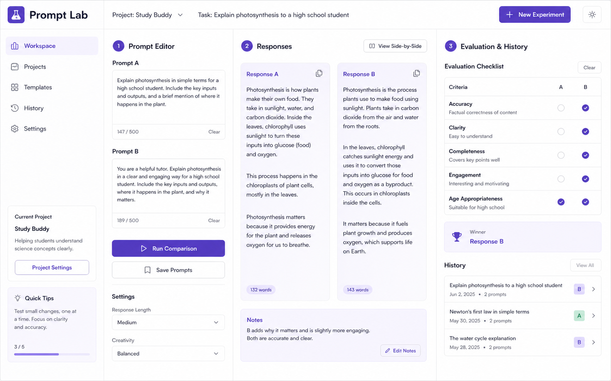

AI practice tool
Prompt Lab
指示文の違いによる回答の変化を並べて比較し、正確さや分かりやすさを記録する学習支援ツールです。
これは制作物表示の確認用に作成した架空のサンプルです。実在するAIサービスではありません。

比較
2種類の指示文と回答を同じ画面で確認します。
評価
正確さ、明瞭さ、情報の不足を観点別に記録します。
振り返り
結果と改善案を履歴として残し、次の指示文へ生かします。
ClassView Sample Works
AI活用演習へ戻るAI practice tool
指示文の違いによる回答の変化を並べて比較し、正確さや分かりやすさを記録する学習支援ツールです。
これは制作物表示の確認用に作成した架空のサンプルです。実在するAIサービスではありません。

2種類の指示文と回答を同じ画面で確認します。
正確さ、明瞭さ、情報の不足を観点別に記録します。
結果と改善案を履歴として残し、次の指示文へ生かします。